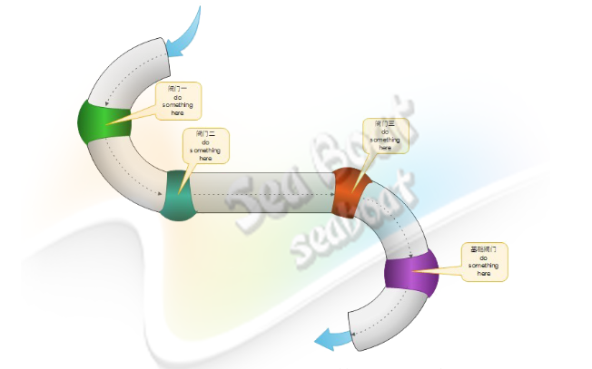

管道模式的好处
- 在Netty中对数据的处理编码解码读取都是通过管道模式串连起来，这些handler都是管道中的一个阀门。对于管道模式的好处在这里简单的说下。在一个比较复杂的大型系统中，假如存在某个对象或数据流需要被进行繁杂的逻辑处理的话，我们可以选择在一个大的组件中进行这些繁杂的逻辑处理，这种方式确实达到了目的，但却是简单粗暴的。或许在某些情况这种简单粗暴的方式将带来一些麻烦，例如我要改动其中某部分处理逻辑、我要添加一些处理逻辑到流程、我要在流程中减少一些处理逻辑时，这里有些看似简单的改动都让我们无从下手，除了对整个组件进行改动。整个系统看起来没有任何可扩展性和可重用性。
是否有一种模式可以将整个处理流程进行详细划分，划分出的每个小模块互相独立且各自负责一段逻辑处理，这些逻辑处理小模块根据顺序连起来，前以模块的输出作为后一模块的输入，最后一个模块的输出为最终的处理结果。如此一来修改逻辑时只针对某个模块修改，添加或减少处理逻辑也可细化到某个模块颗粒度，并且每个模块可重复利用，可重用性大大增强。 
管道模式在Netty中的应用
- 在Netty中的管道对象就是DefaultChannelPipeline，他是Channel中的一个属性。下面我们具体来看看他的应用与实现
1 | //初始化管道对管道对管道中的通道添加处理器 |
DefaultChannelPipeline源码分析1
2
3
4
5
6
7
8
9
10
11
12
13
14
15
16
17
18
19
20
21
22
23
24
25
26
27
28
29
30
31
32
33
34
35
36
37
38
39
40
41
42
43
44
45
46
47
48
49
50
51
52
53
54
55
56
57
58
59
60
61
62
63
64
65
66
67
68
69
70
71
72
73
74
75
76
77
78
79
80
81
82
83
84
85
86
87
88
89
90
91
92
93
94
95public class DefaultChannelPipeline implements ChannelPipeline {
//定义了一个设置头部处理器属性
final AbstractChannelHandlerContext head;
//定义了一个设置尾部处理器属性
final AbstractChannelHandlerContext tail;
//向管道中添加处理器
public final ChannelPipeline addFirst(String name, ChannelHandler handler) {
return addFirst(null, name, handler);
}
public final ChannelPipeline addFirst(EventExecutorGroup group, String name, ChannelHandler handler) {
final AbstractChannelHandlerContext newCtx;
synchronized (this) {
checkMultiplicity(handler);
name = filterName(name, handler);
newCtx = newContext(group, name, handler);
addFirst0(newCtx);
...
}
}
//交换处理器位置将整个处理器串连在了Pipeline上
private void addFirst0(AbstractChannelHandlerContext newCtx) {
AbstractChannelHandlerContext nextCtx = head.next;
newCtx.prev = head;
newCtx.next = nextCtx;
head.next = newCtx;
nextCtx.prev = newCtx;
}
public final ChannelPipeline addLast(String name, ChannelHandler handler) {
return addLast(null, name, handler);
}
public final ChannelPipeline addLast(EventExecutorGroup group, String name, ChannelHandler handler) {
final AbstractChannelHandlerContext newCtx;
synchronized (this) {
checkMultiplicity(handler);
newCtx = newContext(group, filterName(name, handler), handler);
addLast0(newCtx);
}
}
private void addLast0(AbstractChannelHandlerContext newCtx) {
AbstractChannelHandlerContext prev = tail.prev;
newCtx.prev = prev;
newCtx.next = tail;
prev.next = newCtx;
tail.prev = newCtx;
}
public final ChannelPipeline fireChannelActive() {
AbstractChannelHandlerContext.invokeChannelActive(head);
return this;
}
public final ChannelPipeline fireChannelInactive() {
AbstractChannelHandlerContext.invokeChannelInactive(head);
return this;
}
public final ChannelPipeline fireExceptionCaught(Throwable cause) {
AbstractChannelHandlerContext.invokeExceptionCaught(head, cause);
return this;
}
public final ChannelPipeline fireUserEventTriggered(Object event) {
AbstractChannelHandlerContext.invokeUserEventTriggered(head, event);
return this;
}
public final ChannelPipeline fireChannelRead(Object msg) {
AbstractChannelHandlerContext.invokeChannelRead(head, msg);
return this;
}
public final ChannelPipeline fireChannelReadComplete() {
AbstractChannelHandlerContext.invokeChannelReadComplete(head);
return this;
}
public final ChannelPipeline fireChannelWritabilityChanged() {
AbstractChannelHandlerContext.invokeChannelWritabilityChanged(head);
return this;
}
}
当有新的数据可读的时候channel将调用管道中的fireChannelRead() ,fireChannelReadComplete()发起了对管道中处理器的调用1
2
3
4
5
6
7
8
9
10
11
12
13
14
15
16
17
18
19
20
21
22
23
24
25
26
27abstract class AbstractChannelHandlerContext extends DefaultAttributeMap implements ChannelHandlerContext, ResourceLeakHint {
static void invokeChannelRead(final AbstractChannelHandlerContext next, Object msg) {
final Object m = next.pipeline.touch(ObjectUtil.checkNotNull(msg, "msg"), next);
EventExecutor executor = next.executor();
if (executor.inEventLoop()) {
next.invokeChannelRead(m);
} else {
executor.execute(new Runnable() {
public void run() {
next.invokeChannelRead(m);
}
});
}
}
private void invokeChannelRead(Object msg) {
if (invokeHandler()) {
try {
((ChannelInboundHandler) handler()).channelRead(this, msg);
} catch (Throwable t) {
notifyHandlerException(t);
}
} else {
fireChannelRead(msg);
}
}
}